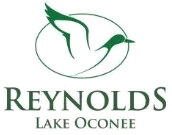
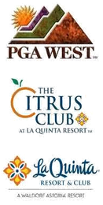
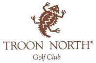
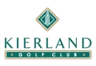
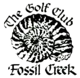
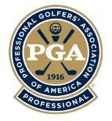

I run golf and resort operations. Texas to Arizona to California to Georgia, and now the Atlantic coast of Florida. Every club in the list to the left is one I was responsible for.
Chief operating officer, Troon. St. Augustine, Florida. 2018 to present.
75krounds a year
160associates
700club members
2championship courses
Overall management of the King & Bear and Slammer & Squire courses for the world's largest golf management company. Two top-ranked championship courses, a team of 160 associates, and two clubhouses with two restaurants and two retail shops serving 700 club members plus guests of a 300-room Marriott resort. Golf, retail, food and beverage, catering, membership, marketing, agronomy, accounting, and human resources all report in.

Reynolds Lake Oconee
General manager. Greensboro, Georgia. 2015 to 2018.
$40Mannual revenue
600employees
117holes of golf
3,500memberships
All operations across roughly 11,000 acres in northeast Georgia: 117 holes designed by some of the biggest names in the game, six clubhouses, six food and beverage outlets, eleven retail outlets, the Reynolds Kingdom of Golf, four marinas, a wellness center, four pools, two water parks, an award-winning tennis center, and four family parks.
What came of it
Member dues up 23 percent, golf revenue up 15 percent, food and beverage up 58 percent, and golf retail up 24 percent during my initial tenure.
Recruited and developed seven new director-level department heads, and created two new roles, golf sales director and events director, to drive outside business for golf, weddings, and corporate meetings.
Opened The National Tavern, a non-traditional gastropub that produces more covers than every other restaurant on property combined.
Renovated and reopened Eighty8 Kitchen + Cocktails, which beat every historical figure recorded before the renovation in its first year.
Built the first daily member and guest feedback program at Reynolds and collected more than 15,000 surveys in two years.
Rebuilt a poolside cafe into a year-round market with grab-and-go and made-to-order menus, and added poolside food and beverage service.
Negotiated a six-course turf equipment lease and a 470-car golf fleet lease with service and preventative maintenance included.
Expanded indoor instruction at Reynolds Kingdom of Golf with two enclosed bays and three covered open-air areas for year-round teaching.

PGA West, The Citrus Club, and La Quinta Resort
Executive director, Hilton. La Quinta, California. 2013 to 2015.
$50Mannual revenue
300krounds a year
525on the team
9championship courses
One of the largest golf operations in the United States. Nine championship courses hosting a PGA Tour event, five clubhouses and six turf care facilities, serving 2,400 private members and guests of an 800-room Waldorf Astoria resort, with $5.5 million in annual club food and beverage and $3.5 million in club retail.
What came of it
Led a business restructure creating a senior golf leadership team of three general managers and a director of agronomy, moving retail, food and beverage, receiving, and clubhouse maintenance out of a centralized off-site function and into on-property ownership.
Contracted retail purchasing through Troon across all five shops, adding half a million dollars of retail revenue in one year.
Led a multi-million dollar renovation of a 60,000 square foot member-only clubhouse, moving the golf shop to the first floor for easier check-in and creating a patio cafe and an upscale second-floor dining room with a terrace. Sold 138 memberships in 2014 and secured 230 more in a bulk deal with a nearby residential development.
Managed two major floods requiring $5 million of course repairs, working directly with insurance adjusters and golf course construction contractors across nine courses.
Built a five-person club engineering team focused on asset preservation and preventative maintenance across twelve buildings.
Created a smartphone-friendly employee recognition program that tripled participation and was adopted by the 800-room Waldorf Astoria for its 1,300 employees.
Implemented a guest loyalty feedback program adopted by every Hilton property with golf on site.
Negotiated the transition from owned to leased turf equipment across nine courses and a 580-car golf fleet lease.
Indian Wells Golf Resort
General manager, Troon. Indian Wells, California. 2011 to 2013.
$12.5Mannual revenue
83krounds a year
225on the team
2championship courses
A city-owned resort operation with a 60,000 square foot clubhouse serving 5,000 residents and four on-site resort partners with 950 hotel rooms, plus a $4.5 million food and beverage operation and a retail center recognized among the top 100 golf shops in America.
What came of it
Improved financials by more than $1 million in my first year, delivering the club's first profitable year, and its first profitable year in food and beverage.
Improved financials by more than $600,000 in the first six months.
Earned a facility of the year nomination at the Troon annual conference in 2012.
Appointed with one year left on the management contract, then successfully renewed it in 2012.
Raised associate satisfaction 9 percent with a rewards and recognition program built around communication and continuous improvement.
Moved the club off aging owned assets onto capital leases for turf equipment, golf cars, and facility technology, and managed $300,000 of capital projects a year.

Troon North Golf Club
General manager, Troon. Scottsdale, Arizona. 2008 to 2011.
$13Mannual revenue
72krounds a year
120on the team
2top-ranked courses
Troon's flagship facility and the only owned asset of the world's largest golf management company. A 40,000 square foot clubhouse serving 150 golfing members and an on-site Four Seasons partner with 205 casitas, a $2.5 million food and beverage operation, and a top 100 golf shop turning $2 million a year.
What came of it
Improved financials by more than $1 million.
Recognized as most improved facility at the Troon annual conference in 2011, and nominated for general manager of the year in 2010.
Raised associate satisfaction 22 percent in two years with a recognition program built on text voting, which became a Troon best practice.
Delivered the largest food and beverage revenue in the history of the club.
Created a logo and marketing campaign that opened the restaurant to the local community for breakfast, lunch, and dinner seven days a week for the first time.
Grew total facility revenue 12 percent by shifting marketing dollars into payroll and doubling the sales staff.
Troon headquarters
Regional director. Scottsdale, Arizona. 2003 to 2008.
8facilities opened
30courses reviewed in Japan
5Caribbean islands
Oversight of multiple facilities spanning new development projects, private clubs, resorts, and daily fee clubs, in markets from Arizona to Florida and on to five Caribbean islands and Japan. Managed owner relationships and served as the resource for on-site management teams.
What came of it
Opened eight new facilities from the earliest stages of course and clubhouse construction, coordinating course equipment, clubhouse furnishings, golf cars, and operating supplies.
Prepared five-year proformas, first-year budgets, business plans, and operating procedures, plus logos, websites, collateral, and first-year marketing plans.
Led a 90-day due diligence review of a 30-course portfolio in Japan for a Troon investor and partner, delivering financial and physical condition reports with photography and a staff and service survey for every facility.
Legend Trail Golf Club
General manager, Troon. Scottsdale, Arizona. 2001 to 2003.
$6Mannual revenue
38krounds a year
60on the team
800residents served
One 18-hole championship course serving a residential community still completing its build out, alongside visitors to the Scottsdale resort destination.
What came of it
Protected a developer-owned asset through the difficult period following September 11 while the residential community completed its build out.
Managed the sale of the facility on completion, working with brokers and buyers on the owner's behalf through a successful transition to new ownership.
Camelback Golf Club
Head golf professional, Marriott. Scottsdale, Arizona. 1999 to 2001, and assistant professional 1993 to 1996.
75krounds a year
90on the team
150golfing members
2championship courses
The foundation of my hospitality training with Marriott, and the place my election to PGA membership in 1999 turned into a first upper-level management role. I first arrived in 1993 as an assistant professional, a transfer from Texas, to learn the business at Marriott Golf's flagship property alongside resort play from Camelback Inn.

Kierland Golf Club
Assistant golf professional, Marriott. Scottsdale, Arizona. 1996 to 1999.
60krounds a year
50on the team
27holes
On the opening crew of a new 27-hole championship course serving daily fee play at a resort destination.

Golf Club at Fossil Creek
Assistant golf professional, Marriott. Fort Worth, Texas. 1990 to 1993.
38krounds a year
60on the team
100golfing members
18Palmer holes
Eighteen holes of Arnold Palmer design serving 100 golfing members and daily fee play from across the metroplex. Where it started.
Credentials
Elected to PGA membership in 1999.
Education

PGA of America
Club management. 1996 to 1999.
University of North Texas
Business marketing. 1991 to 1993.
Systems and skills
Jonas, Micros, and Abacus club software
EZ Links and Vision Perfect
Oracle and Pipeline CRM
Excel, Word, and PowerPoint
Web design and HTML
Broadcast email design and delivery
Database management
Photoshop and Illustrator
Graphic design and photography
A little about me
Hi, I'm Lon Grundy. Not Ron or Lou, though I'll let Juan Grande slide on occasion.
I grew up in Fort Worth, Texas, where you'd find me at the local golf course either scrubbing clubs and dodging balls in the range picker or hunting birdies with a bag on my back. I had no idea the sport would turn into a career. First as a golf professional at Camelback in Scottsdale, then as a general manager with Troon, and eventually as executive director for Hilton's golf operations at PGA West, The Citrus Club, and La Quinta Resort in Palm Springs.
I came back to my southern roots for a move to Georgia and Reynolds Lake Oconee, then relocated to Florida in 2018 with my wife Kim and our two boys, Ethan and Hayden, who are enjoying life at the beach. Kim is working on her second novel. The boys are working on their second helping of whatever is on the table.
My mantra
Let things unfold organically
My workout
Plank regularly for a strong core and calloused elbows
My cure-all
Chips and salsa with a good marg
My movie fix
Tin Cup and Something About Mary. I can quote every line
My ideal day
Beach time with the family and Bob Marley turned up high
Let's talk
References available on request
The fastest way to reach me is email. I'm in St. Augustine, Florida, on Eastern time.